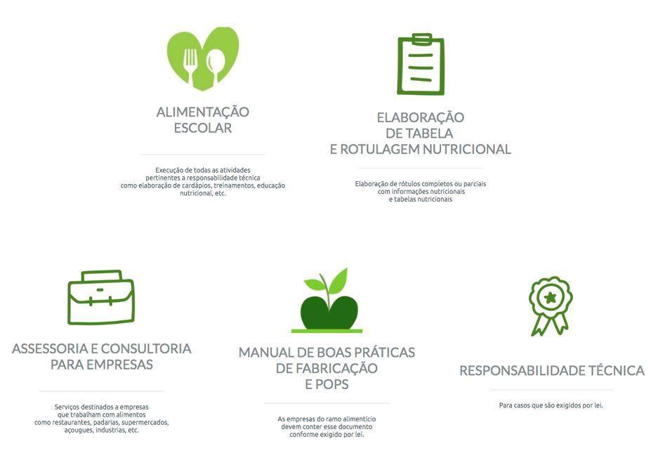
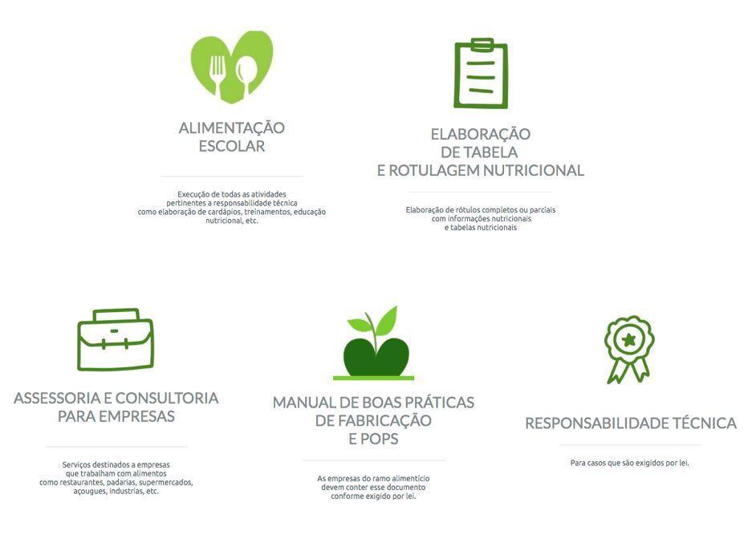

Serviços
A Capim Limão Nutrição é uma empresa comprometida com a saúde e bem-estar de seus clientes. Nossa missão é fornecer serviços de qualidade na área de nutrição, com foco na segurança alimentar e na promoção de hábitos saudáveis.

A Capim Limão Nutrição é uma empresa comprometida com a saúde e bem-estar de seus clientes. Nossa missão é fornecer serviços de qualidade na área de nutrição, com foco na segurança alimentar e na promoção de hábitos saudáveis.
